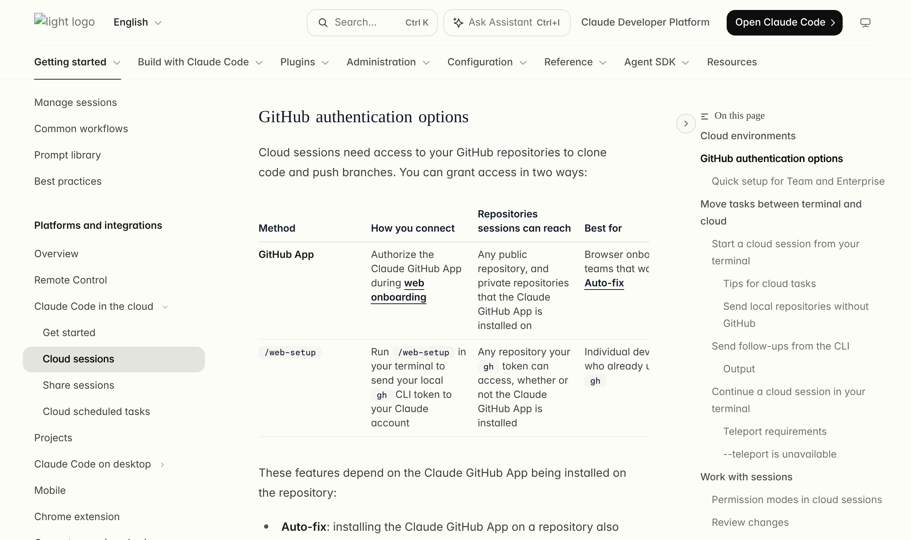
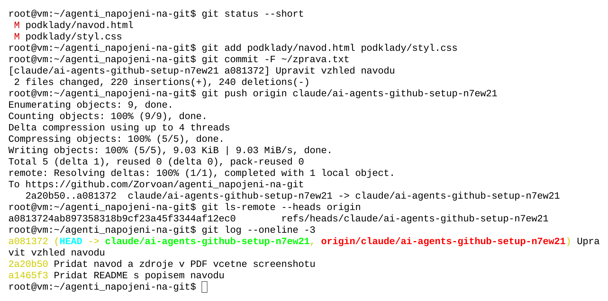
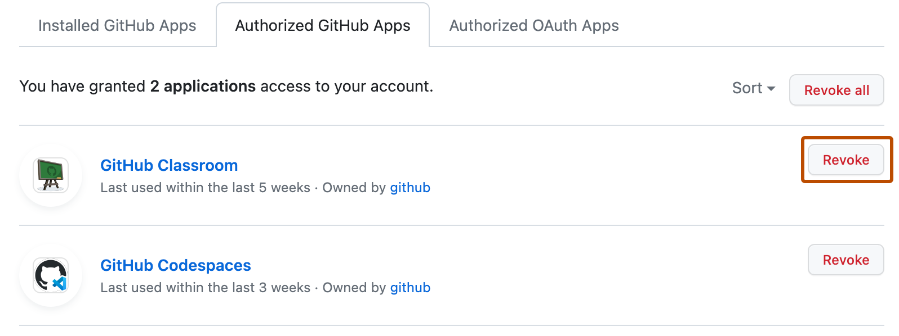
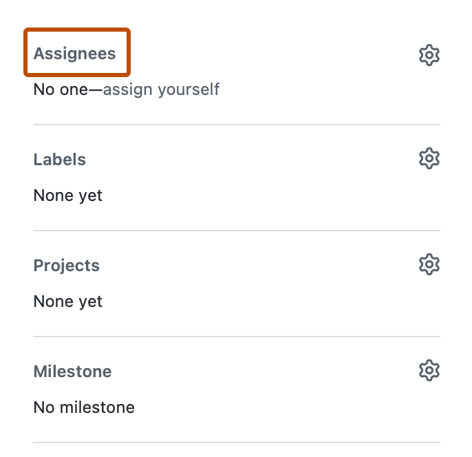
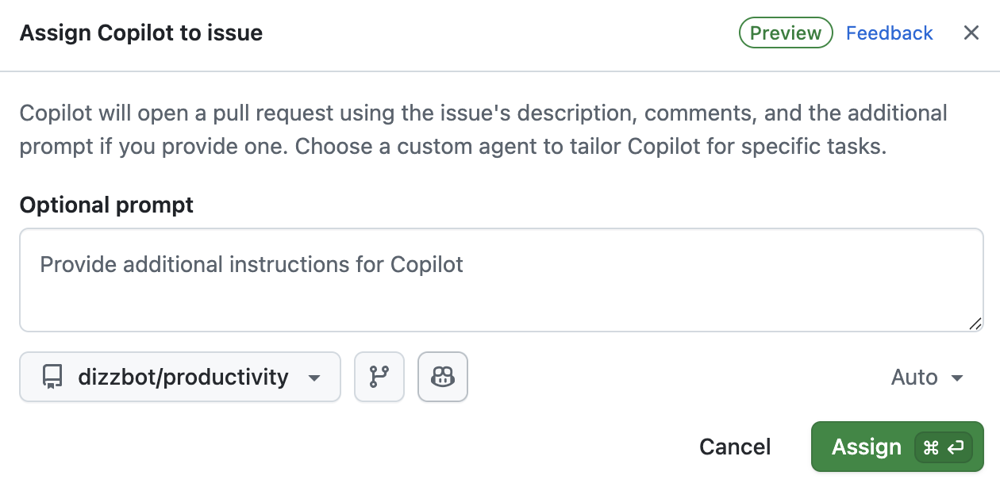
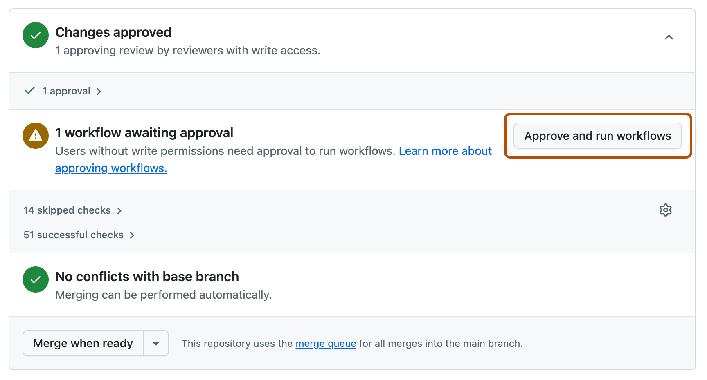
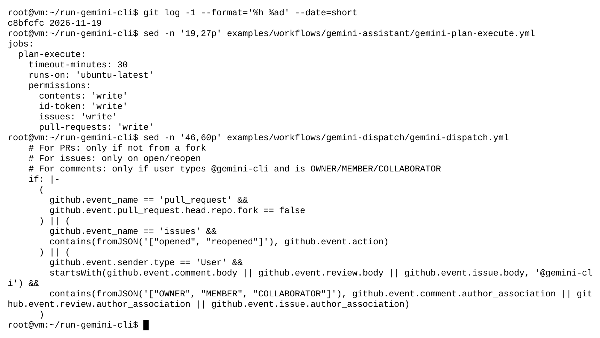

Cílem návodu je ukázat, jak AI agentovi nastavit přístup ke konkrétnímu repozitáři na GitHubu tak, aby v něm mohl pracovat: číst kód, vytvářet větve, commitovat a otevírat pull requesty. Postup je ukázán na třech agentech od různých výrobců, kteří se k repozitáři připojují každý jiným způsobem:
Claude Code v cloudu (Anthropic) – agent běží na serverech výrobce a k repozitáři se připojí přes aplikaci Claude GitHub App.
GitHub Copilot cloud agent (GitHub) – agent je přímo součástí GitHubu, přístup se jen povolí v nastavení.
Gemini CLI jako GitHub Action (Google) – agent běží v GitHub Actions přímo v repozitáři.
Čísla v hranatých závorkách odkazují na seznam zdrojů v příloze Zdroje.pdf. Názvy tlačítek a nabídek jsou uvedeny anglicky tak, jak je používá rozhraní i dokumentace.
Poznámka ke screenshotům: snímky terminálu jsou pořízeny při tvorbě tohoto návodu v ukázkovém repozitáři. Snímky rozhraní GitHubu jsou převzaty z oficiální dokumentace GitHub Docs a snímky postupu u Claude Code z oficiální dokumentace code.claude.com. U každého obrázku je uveden zdroj.
Jak agent získá přístup k repozitáři
Agent potřebuje od GitHubu oprávnění. V praxi se používají čtyři způsoby:
Způsob
Jak funguje
Použito u agenta
GitHub App
Aplikace se nainstaluje na účet nebo organizaci a dostane jen vyjmenovaná oprávnění (např. Contents: Read & write). Při instalaci lze zvolit Only select repositories [9].
Claude Code, Gemini CLI
Token uživatele (OAuth)
Agent jedná jménem uživatele a s jeho oprávněními, např. s tokenem z GitHub CLI gh.
Claude Code (/web-setup)
Vestavěný agent GitHubu
Agent je součástí GitHubu, přístup se povolí v nastavení a omezí na vybrané repozitáře [5].
GitHub Copilot
GITHUB_TOKEN
Krátkodobý token, který GitHub vytvoří pro každý běh workflow. Platí jen pro daný repozitář, oprávnění se nastavují v bloku permissions: [15].
Gemini CLI
Pro všechny tři agenty platí stejná doporučení:
dávat agentovi přístup jen k repozitáři, ve kterém má pracovat, a jen potřebná oprávnění,
nechat agenta pracovat ve vlastní větvi a změny přebírat přes pull request s kontrolou člověkem,
chránit hlavní větev pravidly branch protection nebo rulesets. Dokumentace Claude Code to doporučuje výslovně, protože jeho proxy samo neomezuje, do kterých větví se pushuje [3]. Stejně to doporučuje dokumentace Gemini [16].
Claude Code v cloudu
Claude Code v cloudu naklonuje vybraný repozitář do izolovaného virtuálního stroje, provede úpravy, spustí testy a výsledek nahraje do nové větve. Z ní se potom vytvoří pull request [1]. V takové relaci vznikl i tento návod, takže kapitola 3.6 ukazuje skutečný průběh.
Předpoklady: účet na claude.ai s plánem Pro, Max, Ultra nebo Team (u Enterprise prémiové místo) [1] a účet na GitHubu s právem zápisu do repozitáře. Agent pracuje jen s existujícím repozitářem, nový je proto potřeba nejdřív založit na GitHubu [1].
Přihlášení a propojení s GitHubem
Otevřete https://claude.ai/code a přihlaste se účtem claude.ai.
Stránka vás vyzve k propojení s GitHubem (Sign in with GitHub). Na autorizační stránce GitHubu žádost schvalte, GitHub vás vrátí zpět [1].
Na plánech Team a Enterprise musí nejdřív vlastník organizace zapnout konektor GitHub v Organization settings > Connectors [1].
Postup „Connect GitHub“ v oficiální dokumentaci (zdroj: [1])
Přístup ke konkrétnímu repozitáři
Propojení samo stačí pro veřejné repozitáře. Pro soukromý repozitář musí být na repozitáři nainstalovaná aplikace Claude GitHub App [1]:
Otevřete https://github.com/apps/claude/installations/new (nebo potvrďte výzvu během prvního nastavení).
Vyberte účet nebo organizaci, které repozitář patří. V organizaci může instalaci schvalovat její vlastník [1].
Zvolte Only select repositories a v seznamu Select repositories vyberte repozitář [9].
Instalací aplikace se zároveň zapne funkce Auto-fix, se kterou Claude reaguje na chyby CI a na komentáře v pull requestech [1].
Druhá možnost je pro uživatele GitHub CLI: v terminálu spustit gh auth login, v Claude Code CLI se přihlásit příkazem /login a zadat /web-setup. Token z gh se uloží šifrovaně k účtu Claude a cloudové relace pak mají přístup ke všem repozitářům, ke kterým má přístup tento token [1], [2].

Srovnání obou způsobů autorizace – GitHub App a /web-setup (zdroj: [2])
Prostředí
Po propojení vznikne prostředí Default s omezeným přístupem k síti (Limited). Relace se dostane jen k běžným registrům balíčků a povoleným doménám. Na plánech Team a Enterprise se prostředí vytvoří ve formuláři Create your first cloud environment tlačítkem Create & finish [1]. Později lze v prostředí přidat povolené domény, proměnné prostředí a skript, který se spustí při startu relace [3].
Zadání úkolu
Pod vstupním polem vyberte repozitář a případně větev, od které má agent začít [1].
Zvolte režim oprávnění: Auto (akce kontroluje klasifikátor), Accept edits (agent upravuje soubory a nahraje větev bez dotazu) nebo Plan (agent nejdřív navrhne postup a čeká na schválení) [1].
Napište konkrétní zadání a odešlete ho [1].
Postup „Start a task“ – výběr repozitáře, větve a režimu oprávnění (zdroj: [1])
Kontrola výsledku
Ve webovém rozhraní se zobrazí změny (diff). Můžete k nim psát komentáře, vytvořit pull request nebo poslat další zadání [1].
Ukázka: agent pracuje v repozitáři
Agent pracuje ve vlastní větvi, zde claude/ai-agents-github-setup-n7ew21. Následující snímek je pořízen v relaci, ve které vznikl tento návod. Agent vytvořil commit, nahrál ho na GitHub a ověřil, že větev na GitHubu existuje:

Commit a push z cloudové relace Claude Code do ukázkového repozitáře (snímek terminálu, 25. 11. 2026)
Jak je přístup zabezpečený a jak ho odebrat
Skutečné přihlašovací údaje ke GitHubu se do virtuálního stroje nedostanou. Git operace jdou přes proxy, která omezený pověřovací údaj nahradí skutečným tokenem. Proxy nedovolí mazat větve ani pushovat tagy a obsluhuje jen repozitáře připojené k relaci [3].
Přístup se odebírá odpojením GitHubu na claude.ai/customize/connectors [1]. Na GitHubu lze aplikaci odinstalovat nebo zrušit její autorizaci v Settings > Applications [12].

Zrušení autorizace aplikace tlačítkem „Revoke“ v nastavení GitHubu (zdroj: GitHub Docs [12])
GitHub Copilot cloud agent
Copilot cloud agent je součástí GitHubu, takže se nic neinstaluje. Přístup se povolí pro vybrané repozitáře a úkol se agentovi zadá přiřazením issue nebo na kartě Agents. Agent pracuje ve větvi copilot/… a výsledek odevzdá jako pull request [4], [6].
Předpoklady: některý z placených plánů GitHub Copilot. U Copilot Business a Enterprise o použití agenta rozhoduje politika organizace [5].
Povolení agenta pro konkrétní repozitář
Ve výchozím stavu je agent povolen ve všech repozitářích. Omezení na jeden repozitář se nastaví takto [5]:
Vpravo nahoře klikněte na profilový obrázek a zvolte Copilot settings.
V levém panelu v části Copilot zvolte Cloud agent (adresa github.com/settings/copilot/coding_agent).
V části Policies u položky Repository access vyberte Only selected repositories.
Klikněte na Select repositories a vyberte repozitář.
Na stejné stránce lze v části Partner agents zapnout i agenty třetích stran (Claude, Codex). Ti mají přístup ke stejným repozitářům jako Copilot [5].
Zadání úkolu přes issue
V repozitáři otevřete kartu Issues a issue s popisem úkolu.
V pravém panelu klikněte na Assignees a ze seznamu vyberte Copilot [4].

Sekce „Assignees“ v panelu issue (zdroj: GitHub Docs [4])Copilot v seznamu řešitelů (zdroj: GitHub Docs [4])
V zobrazeném dialogu lze zvolit repozitář, výchozí větev a doplnit instrukce. Potvrďte tlačítkem Assign [4].

Dialog „Assign Copilot to issue“ (zdroj: GitHub Docs [4])
Úkol lze zadat i z karty Agents v repozitáři, ze stránky github.com/copilot, tlačítkem Task na úvodní stránce GitHubu nebo příkazem /task v Copilot Chatu [4].
Průběh práce a další úpravy
Agent vytvoří větev a pull request a po dokončení požádá o kontrolu. Další úpravy se zadávají komentářem s @copilot v pull requestu. Agent na komentář zareaguje a v historii pull requestu se objeví záznam „Copilot started work“ [4].
Komentář v pull requestu spustí další práci agenta (zdroj: GitHub Docs [4])
Schválení spuštění workflow
Na změny od Copilota se workflow GitHub Actions ve výchozím stavu nespustí samo. Je potřeba je schválit tlačítkem Approve and run workflows. Správce repozitáře může schvalování vypnout v Settings > Copilot > Cloud agent, dokumentace před tím ale varuje [8].

Workflow čekající na schválení v pull requestu od Copilota (zdroj: GitHub Docs [8])
Omezení agenta
Agent může pushovat jen do jedné větve: do větve existujícího pull requestu, nebo do nové větve copilot/…. Platí pro něj i ochrana větví [6].
Nemá přístup k tajným hodnotám (secrets) repozitáře. Dostane jen hodnoty z prostředí copilot [7].
Přístup k internetu omezuje firewall. Zablokovaný požadavek agent oznámí v pull requestu [6], [13].
Upozornění na požadavek zablokovaný firewallem (zdroj: GitHub Docs [13])
Gemini CLI jako GitHub Action
U třetího agenta je princip jiný: agent neběží u výrobce, ale v GitHub Actions přímo v repozitáři. Google k tomu poskytuje akci google-github-actions/run-gemini-cli. Agent se zavolá komentářem @gemini-cli v issue nebo pull requestu. Umí odpovídat na dotazy, kontrolovat pull requesty, třídit issue a po schválení plánu i upravovat kód [14], [16].
Předpoklady: repozitář s povolenými GitHub Actions, administrátorský přístup k jeho nastavení a API klíč pro Gemini z Google AI Studio [14], [15].
API klíč jako secret repozitáře
V Google AI Studio vytvořte API klíč [15].
V repozitáři otevřete kartu Settings a v levém panelu Secrets and variables > Actions [10].
Na kartě Secrets klikněte na New repository secret, jako název zadejte GEMINI_API_KEY, jako hodnotu klíč a potvrďte Add secret [10], [14].
Karta „Settings“ v hlavičce repozitáře (zdroj: GitHub Docs [10])Stránka „Actions secrets and variables“, karta „Secrets“ (zdroj: GitHub Docs [10])
Oprávnění k repozitáři
Varianta A – GITHUB_TOKEN. Pokud se nenastaví vlastní aplikace, akce použije automatický token workflow. Ten platí jen pro tento repozitář a po skončení úlohy vyprší. Oprávnění se zapisují přímo do workflow, např. contents: write, issues: write, pull-requests: write [15].
Varianta B – vlastní GitHub App (doporučuje ji dokumentace) [15]:
Settings > Developer settings > GitHub Apps > New GitHub App: vyplňte název aplikace a Homepage URL.
V části Webhooks zrušte zaškrtnutí Active.
V Repository permissions nastavte Contents, Issues a Pull requests na Read & write a klikněte na Create GitHub App.
Klikněte na Generate a private key, uložte soubor .pem a poznamenejte si App ID.
V levém panelu zvolte Install App, vyberte účet, zvolte Only select repositories, vyberte repozitář a klikněte na Install (stejný dialog jako na obr. 2).
V repozitáři v Settings > Secrets and variables > Actions přidejte proměnnou APP_ID (karta Variables) a secret APP_PRIVATE_KEY s obsahem souboru .pem (karta Secrets).
Vygenerovaný soukromý klíč aplikace (zdroj: GitHub Docs [18])Karta „Variables“ pro proměnnou APP_ID (zdroj: GitHub Docs [11])
Přidání workflow do repozitáře
Workflow se do repozitáře přidají buď příkazem /setup-github v Gemini CLI, nebo zkopírováním ukázkových souborů z examples/workflows do .github/workflows. Vždy je potřeba gemini-dispatch.yml, pro úpravy kódu ještě gemini-invoke.yml a gemini-plan-execute.yml [14], [16]. Do .gitignore se přidá .gemini/ a gha-creds-*.json [14].
Co agent v repozitáři smí, určuje blok permissions ve workflow. Workflow gemini-dispatch.yml navíc agenta spustí jen na komentáře vlastníka, členů a spolupracovníků repozitáře, ne na pull requesty z forků:

Oprávnění a podmínka spuštění v ukázkových workflow z repozitáře run-gemini-cli (snímek terminálu, zdroj souborů: [16])
Zadání úkolu a schválení plánu
V issue nebo pull requestu napište komentář, např. @gemini-cli Refaktoruj funkci calculateTotal v src/utils.js [16].
Agent potvrdí přijetí. Pokud jde o změnu kódu, nejdřív zveřejní plán jako komentář.
Plán schválíte odpovědí @gemini-cli /approve <odkaz nebo ID komentáře s plánem>. Samotné /approve bez odkazu se odmítne [16].